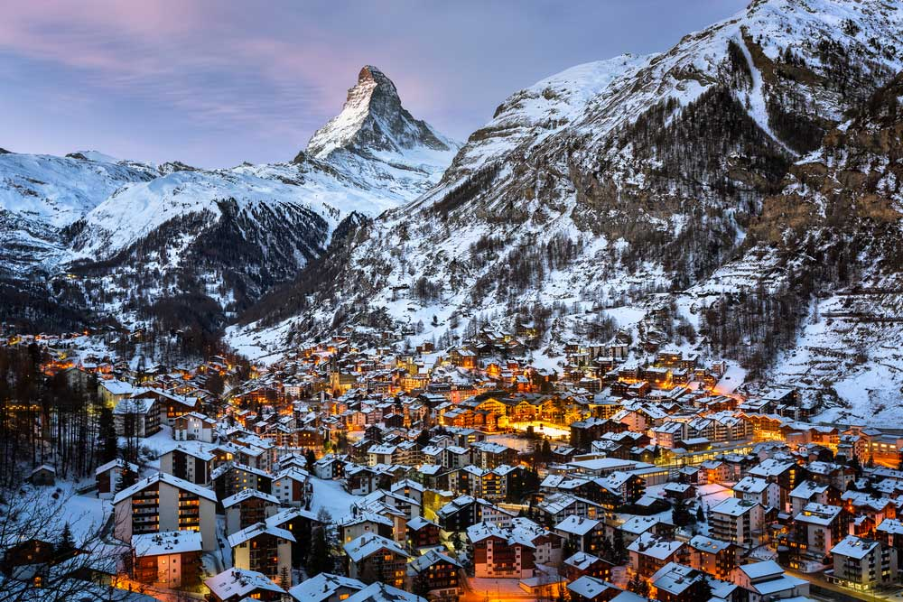
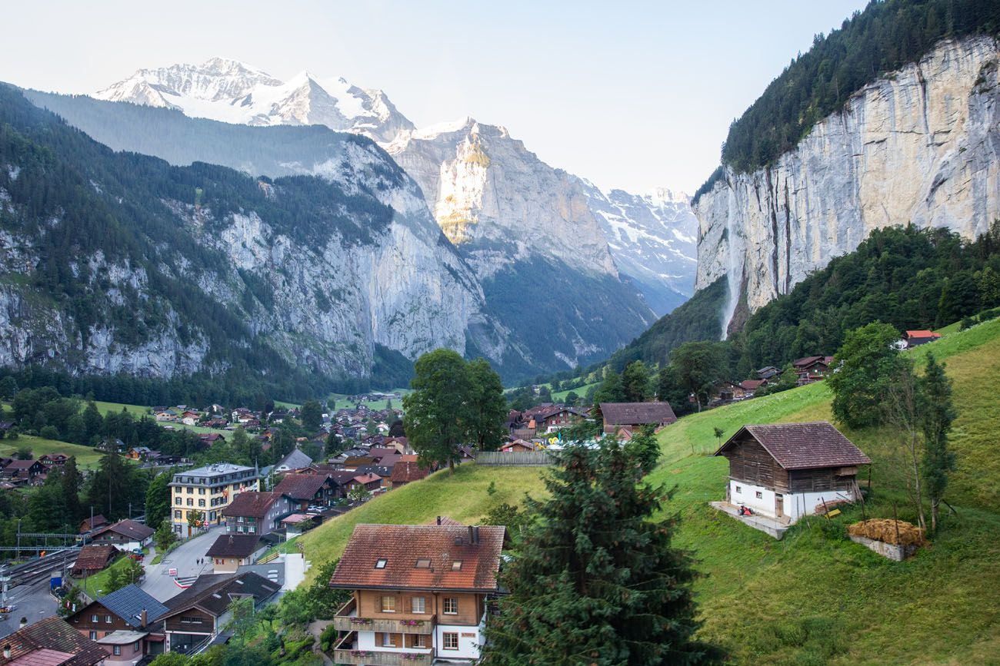
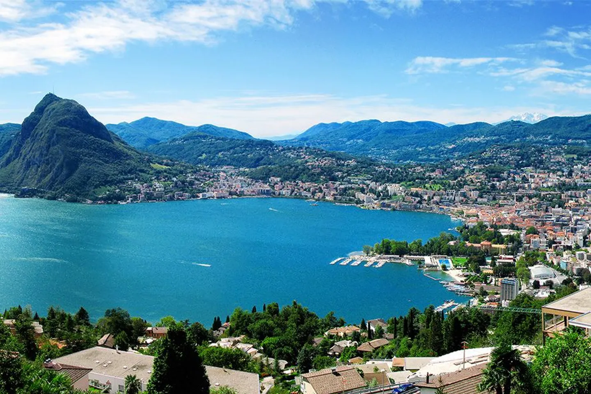

|
|
Best Place To Visit In Switzerland
Zurich
 |
The city of Zurich is the largest in Switzerland, and it is known for being a major financial hub in Europe. Even if you’re not a part of the business world, Zurich has plenty to offer to visitors. To start, Zurich is located right on the edge of Lake Zurich. You can hike or cycle around the perimeter of the lake for some exercise, you could rent a boat and head out onto the water or you could check out some of the man made beaches and jump into the refreshing water for a lake swim.Zurich is also home to a number of historic churches, world-class museums and renowned architecture. Not to be missed is the Swiss National Museum, located in a fairytale castle, it is dedicated to Switzerland’s cultural history. |
Zermatt
Zermatt is a small town that is famous for skiing and mountaineering due to its proximity to the Matterhorn, one of Switzerland’s highest mountains. Cable cars whisk skiers up surrounding mountains in the winter and hikers in the summer. Zermatt is a good town for walking to various sites, since gasoline-driven vehicles are not permitted; any vehicles within the city limits must be battery-operated. Fortunately, for visitors, it takes 30 minutes or less to walk between sites. The town is accessible via scenic train routes that connect it with the outside world. |
 |
Jungfrau Region
|  | The Jungfrau Region is one of the best places to visit in Switzerland, both in summer and winter. A century or two ago, this Alps region was only visited by hard-core adventurers who wanted to ski or climb through the mountains. Now, thanks to an extensive network of railways and well-maintained foot and bike paths, the area is accessible to many types of travelers. |
Lugano
Lugano has been nicknamed the “Monte Carlo of Switzerland,” because of its growing popularity with celebrities. The city is located on Lake Lugano, in the Italian speaking section of this alpine country.A major draw to Lugano is outdoor recreation, and there are plenty of ways to stay active in and around the area. You might spend the day hiking along the clearly signposted Olive Tree Trail, or you could go for a swim at the easily accessible Lido di Lugano right by the city center. |
 |
Lake Geneva
 |
One of the largest lakes in Europe, Lake Geneva lies on the course of the Rhone river on the frontier between France and Switzerland. Aside from the city Geneva most destinations in the Lake Geneva region are in either the Swiss canton of Vaud or the French department of Haute Savoie. The geography is varied, with the Jura mountains in the north, a hilly plain in the center and in the southwest the Alps. The main attractions here are the elegant cities and towns surrounding the lake, the opportunities for skiing and hiking in both mountain ranges, and of course the lake itself. |
Lucerne
Lucerne, located in the German-speaking section of Switzerland, is a city that has it all: city life, a lake and mountains. Considered one of the world’s prettiest cities, Lucerne is most famous for its 14th century Chapel Bridge and Water Tower, which is said to be the most photographed monument in Switzerland. Another famous monument is the Dying Lion, which was carved out of rock to honor Swiss mercenaries who died in France in 1792. Hungry visitors may want to try Luzerner Chügelipastete, a local specialty made from puff pastry, veal and mushrooms doused in a cream sauce. |
 |
Bern
 |
Bern is a picturesque medieval city with a history that dates back to the 12th century, though it did not become a part of the Swiss Confederacy until the 16th century. While not the largest city in Switzerland, Bern is the capital. Its most famous attraction is the Zytglogge, an ancient clock tower with moving puppets. Other popular sites in Bern include the Munster, a Gothic cathedral that rises from the old town, and its town hall. |